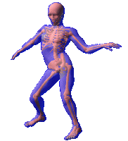
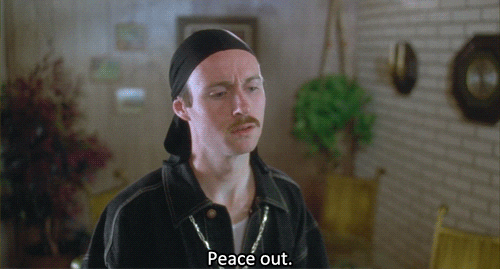

Bootcamp Prework Week 3
What are your thoughts about the roles HTML, CSS, and JavaScript play in the process of rendering content and providing user experience?
For me to put into words kind of how these work together, I like to compare them to the human body. HTML is the skeleton that holds the framework. CSS is the skin that makes us look human, and JavaScript is the central nervous system that makes everything move.
What are some objects that your blog incorporates?
My blog incorporates very few things at the moment. It is very basic but as I learn more and progress it will grow. Right now, I have a Nav bar with multiple links, many different images and giphs, a subscribe input box (not currently functional), and a footer that displays the languages that I have incorporated. My favorite thing about the website is that the links in the header change colors when you hover over them. They also stay highlighted when you are on the current page
Return to Blog Posts